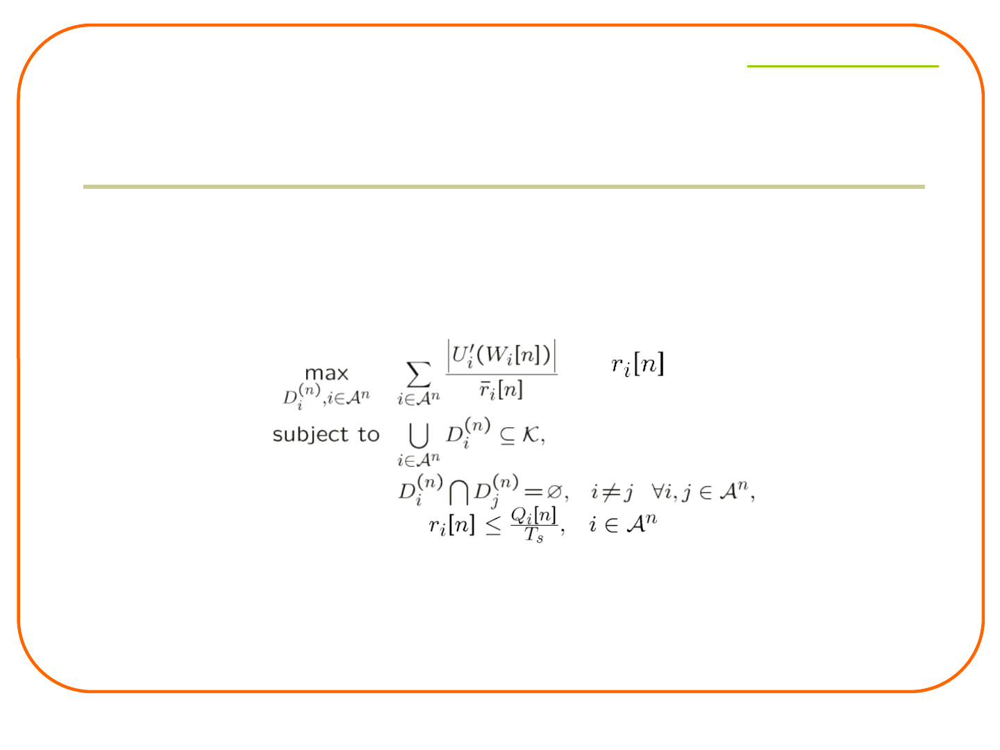
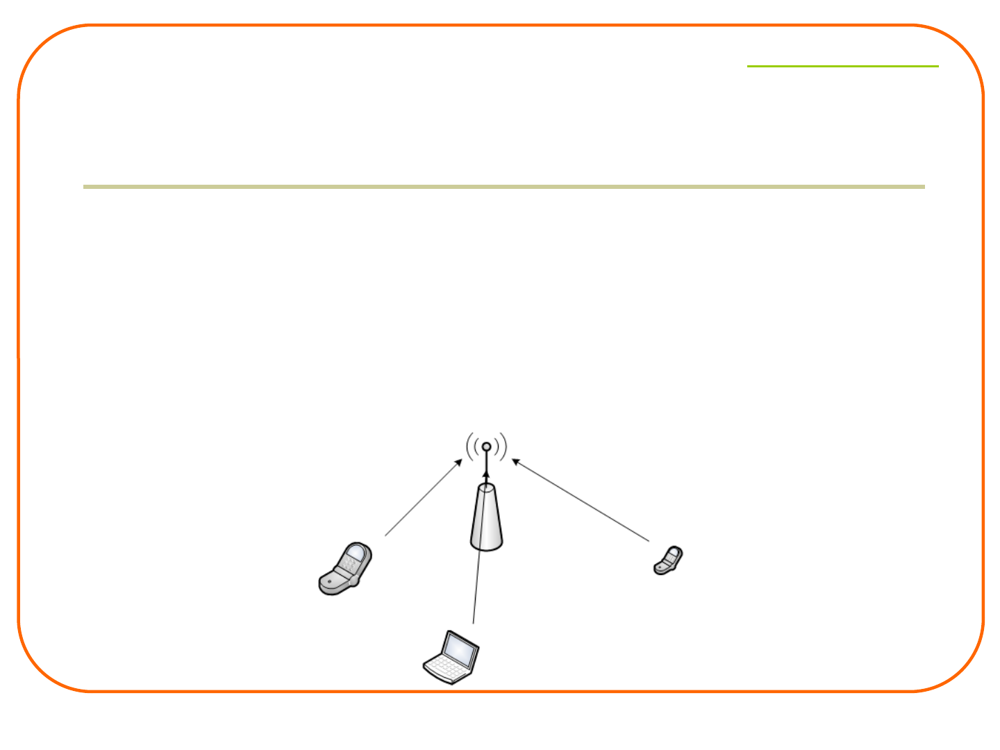
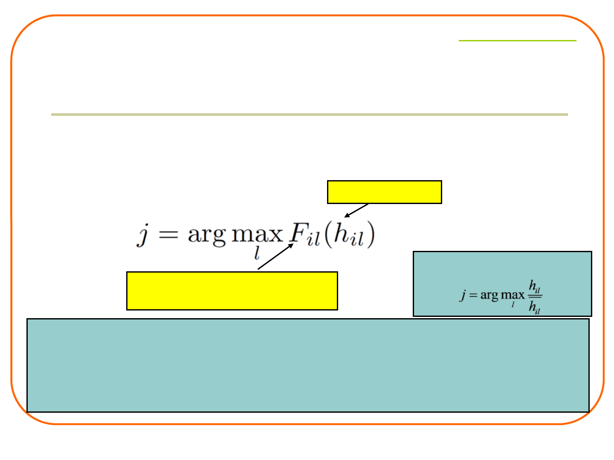
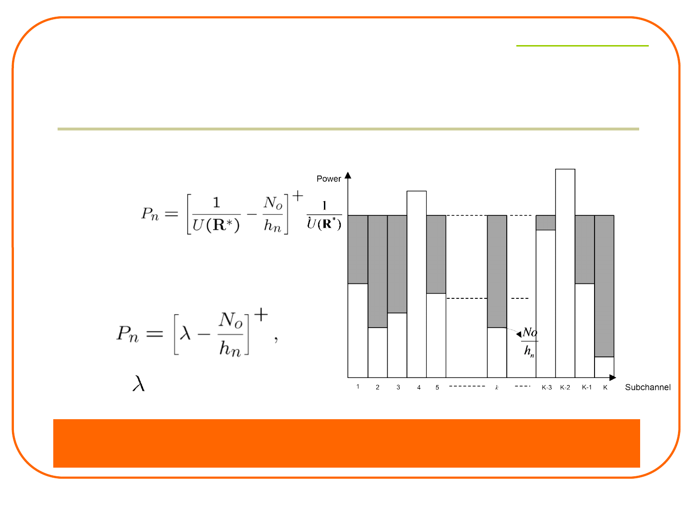
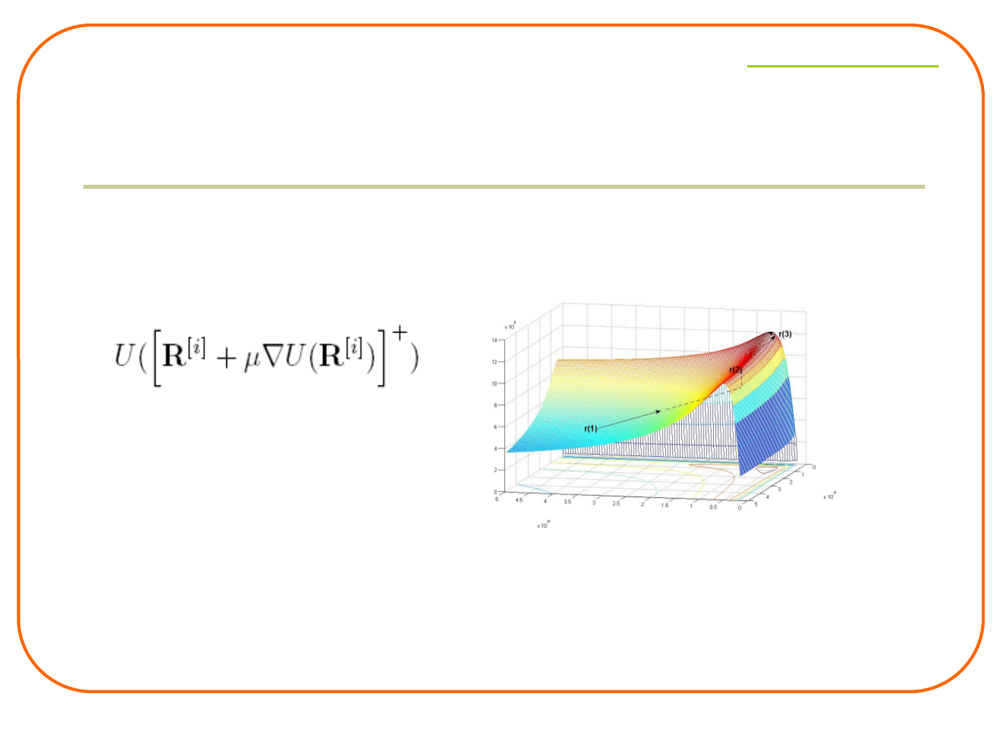
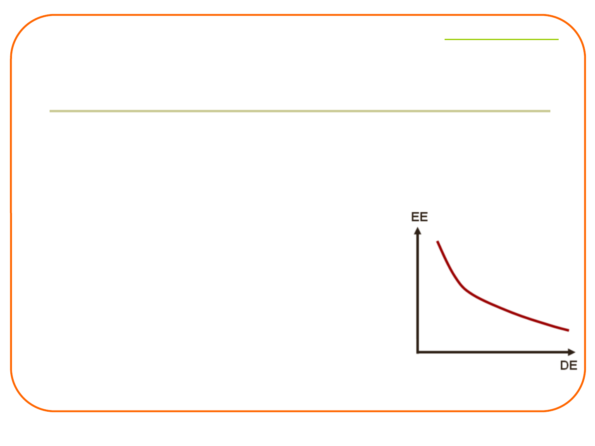

Cross-Layer Design for Spectrum- and
Energy-Efficient Wireless Networks
Guowang Miao
miao@FreeLinguist.com
miao@FreeLinguist.com
Presenter Introduction
l Founder ofFreeLinguist
®
, a cloud platform for you to connect
with native linguists for quality language services, such as
translation, editing, or writing services.
l Expert in communications and networking
l Well known for his original contributions in building a set of
fundamental energy-efficient communications theories, which
are widely accepted nowadays.
l Inventor of energy-efficient scheduling and capacity-
approaching transmission (United States Patent7782829).
l Author of the graduate textbook entitled Fundamentals of
Mobile Data Networks (Cambridge University Press)
l Author of the book entitled Energy and Spectrum Efficient
Wireless Network Design (Cambridge University Press).
l Fruitful inventor with many granted patents, some of which
have been adopted as essential in 4G standards.
2


miao@FreeLinguist.com
Growing Need of Energy-Efficient Design
in Mobile Broadband Access Networks
l Currently, 2% of world energy consumption due to mobile communications
•Radio access network consumes 80% energy of the mobile communications
(Ericsson)
l Mobile data traffic is exploding
•AT&T mobile data traffic increases by 80x
after 2007 (Iphone debut).
•Cisco expects 26x further data traffic in 2015.
•Extrapolating Cisco traffic prediction curve,
300x data traffic in 2020.
6

miao@FreeLinguist.com
Growing Need of Energy-Efficient Design
in Mobile Broadband Access Networks
l Price paid for this enormous growth
• Doubling of the power consumption in cellular
networks (base stations and core network) every 4-5
years.
l Energy consumption has dramatic environmental impact
• Vodafone: total annual emission of CO
2
in 2007/8:
1.45 million tonnes
• More expected in the future
7
miao@FreeLinguist.com
Need of Energy Efficiency in Mobile
Devices
l Mobile devices are usually battery powered
Growingdemand
ofmobiletraffic
Exponentialgrowth
ofbatteryconsumption
(150% every two years)
Slowdevelopment
ofbattery
(10% every two years)
an exponentially increasing gap
between the energy demand and supply
8
miao@FreeLinguist.com
Slow advance in battery
technology /energy
industry critically limit
energy availability
Significance of
energy efficiency
Growing demand for
ubiquitous wideband
wireless applications
Spectrum is a
natural resource
that cannot be
replenished
Significance of
spectral efficiency
Affected by all layers of system design
Cross-layer optimization to exploit interactions between different
layers to fully improve both spectral and energy efficiency
Critical Demand of SE and EE
9
miao@FreeLinguist.com
Revolutionary Thinking Needed
RadioResourceManagementofwirelessnetworks
allocateradioresources
modulation
/coding
power
Celldeployment
T/F/S/C-domain
channelallocation
statically
dynamically
datarate
…
assuranceofqualityofservice(QoS)
formobileusers(rate,delay,outage,coverage,etc.)
Energy IGNORED!
11
miao@FreeLinguist.com
Revolutionary Thinking Needed
12
RadioResourceManagementofwirelessnetworks
allocateradioresources
modulation
/coding
power
Celldeployment
T/F/S/C-domain
channelallocation
statically
dynamically
datarate
…
assuranceofqualityofservice(QoS)
formobileusers(rate,delay,outage,coverage,etc.)

miao@FreeLinguist.com
Propagation and Mobility
l Propagation
• Fading, shadowing
• Reflection at large obstacles, refraction, scattering at small obstacles,
diffraction at edges
• Signal takes several paths to the receiver
l Mobility
• Variation of channel characteristics
signalatsender
signalatreceiver
LOSpulses
multipath
pulses
14


miao@FreeLinguist.com
Physical Layer
l Physical (PHY) layer
• Deal with challenging wireless medium
• Traditionally
• Operate on a fixed set of operating points
• Fixed transmit power
• Fixed modulation and coding scheme (MCS)
• Pro:
• Simplicity
• Con:
• Channel capacity not fully exploited (low SE)
• Excessive energy consumption (low EE )
• Link adaptation: adapt to QoS and environments
19

miao@FreeLinguist.com
Multi-User Perspective
l Typically more than one user in the network
l Multiple users need to share wireless medium
l Medium access control: share wireless channel efficiently
• allocate wireless resources to users on demand
• multiplex/separate transmissions of different users
• avoid interference and collisions
• network-wide flexibility, efficiency, and fairness of resource
sharing
20
miao@FreeLinguist.com
Wireless Resources
l Non-orthogonal resources
• Power
• Users with completely different ( s, t, f, c )
• Independent communications
• Two or more users with overlapping ( s, t, f, c )
• Interact with each other through mutual interference
• Controlled by power
• Examples:
• Inter-cell interference in cellular networks (s
overlap)
• Inter-symbol interference (t overlap)
• Inter-channel interference (f overlap)
• Energy consumption
B
CA
D
22

miao@FreeLinguist.com
MAC Classification
l MAC determines resource allocation
• Centralized and distributed MAC
l Centralized MAC
• Central controller schedules resources of all users
• Examples: data channels in cellular networks
• Pros: high performance, easy control of resource
assignments …
• Cons: high complexity, poor scalability …
23


miao@FreeLinguist.com
Design Rules of Distributed MAC
l Traditional rules of distributed MAC design
• Removal of Idle State
• Some users have data to transmit but decide not to while
channel is idle
• Waste of channel capacity
• Happen frequently with light network load
• Removal of Collision State
• With collision, packet transmission fails
• Waste of both channel capacity and user energy
• Happen frequently with high network load
25
miao@FreeLinguist.com
l Exploit wireless medium properties
• Optimize point to point communication links
• Allocate resources to share wireless medium fairly and efficiently
l Enhance spectral and energy efficiency through joint optimization of
• Physical layer: power control, adaptive modulation and coding, etc., i.e.
link adaptation
• Medium access control (MAC) layer: control the medium access in a
distributed or centralized way
based on knowledge of channel state information.
CSI can be obtained through reciprocity in TDD systems or independent
feedback channels.
Focus
Time
User1
SNR
User2
User3
26

miao@FreeLinguist.com
Multiuser Diversity in A Single
Channel System
l Exploit channel property
• Schedule the user with good channel quality
l Techniques required to exploit multiuser diversity:
• Channel state information feedback
• Adaptive modulation and coding
• Fast channel-aware packet scheduling
l Diversity gain increases with the number of users
Time
User1
SNR
User2
User3
28
miao@FreeLinguist.com
l Utility: the level of satisfaction that a user gets from using some resources
(economics concept)
l Utility functions are determined by applications
l Optimization
• Objective: to maximize the sum of utilities in the system
• Subject to: the degrees of freedom of resource allocation
• DSA: Orthogonality of subcarriers
• APA: Maximum total transmit power
• Pros:
• Application-oriented resource allocation
• Flexibility
• Fairness & QoS provisioning
Cross-Layer Optimization Based on
Utility Functions
Utility
Rate
Utility
Rate
Delay
Utility
Voice
Best-effort
Time-sensitive
30
miao@FreeLinguist.com
Scope
Objective: To maximize
the total utility
Utility functions w. r. t.
average delays
Utility functions w. r. t.
instantaneous data rates
Utility functions w. r. t.
average data rates
Best-effort traffic
DSA and APA
optimization
algorithms
Fairness
Stability
QoS differentiation for heterogeneous traffic
Utility functions w.
r. t. data rates
Channel-aware
scheduling
Channel- and
queue-aware
scheduling
Time-sensitive traffic
w.r.t. : with respect to
31
miao@FreeLinguist.com
Scope
Objective: To maximize
the total utility
Utility functions w. r. t.
average delays
Utility functions w. r. t.
instantaneous data rates
Utility functions w. r. t.
average data rates
Best-effort traffic
DSA and APA
optimization
algorithms
Fairness
Stability
Utility functions w.
r. t. data rates
Channel-aware
scheduling
Channel- and
queue-aware
scheduling
Time-sensitive traffic
w.r.t. : with respect to
32
miao@FreeLinguist.com
Scope of Research
Objective: To maximize
the total utility
Utility functions w. r. t.
average delays
Utility functions w. r. t.
instantaneous data rates
Utility functions w. r. t.
average data rates
Best-effort traffic
DSA and APA
optimization
algorithms
Fairness
Stability
Utility functions w.
r. t. data rates
Channel-aware
scheduling
Channel- and
queue-aware
scheduling
Time-sensitive traffic
w.r.t. : with respect to
36
miao@FreeLinguist.com
Channel-Aware Scheduling Using
Rate-Based Utility Functions
l Users care about the average data rate during 1 to 2 seconds, not the
instantaneous one.
• Average data rate:
• Optimization objective:
l The solution for DSA is very simple.
l A utility function is associated with a kind of fairness
l Multichannel proportional fair scheduling
Priority
Achievableinstantaneousrate
37
miao@FreeLinguist.com
Scope of Research
Objective: To maximize
the total utility
Utility functions w. r. t.
average delays
Utility functions w. r. t.
instantaneous data rates
Utility functions w. r. t.
average data rates
Best-effort traffic
DSA and APA
optimization
algorithms
Fairness
Stability
QoS differentiation for heterogeneous traffic
Utility functions w.
r. t. data rates
Channel-aware
scheduling
Channel- and
queue-aware
scheduling
Time-sensitive traffic
w.r.t. : with respect to
38

miao@FreeLinguist.com
l Utility functions w.r.t. average waiting time
• Average waiting time,
W
Satisfaction level,
U
(
W
)
l Optimization problem of MDU scheduling
• Objective: to maximize the total utility with respect to the predicted
average waiting time at each time slot
l Joint channel- and queue-aware scheduling
• Awareness of channel conditions improve network capacity
• Awareness of queue information ensure QoS
Max-Delay-Utility (MDU) Scheduling
39
miao@FreeLinguist.com
Stability Region
l Ergodic capacity region vs. Stability region
• Ergodic capacity region consists of all (long-term) average data rate vectors
under all possible resource allocation schemes, given the statistics of the
channels
• Stability region of a scheduling policy is defined to be the set of all possible
arrival rate vectors for which the system is stable under the policy.
• Stability region Ergodic capacity region
• Maximum stability region: the largest stability region that can be achieved by
some scheduling schemes ( Ergodic capacity region)
• MDU has maximum stability region.
0
λ
1
λ
2
r
1
r
2
0
AMC,NoDSA
AMC,DSA
NoAMC,NoDSA
40

miao@FreeLinguist.com
Recap
l Centralized Cross-Layer Optimization for SE
l Intelligent resource allocation by exploiting channel
and queue information
• Efficient resource allocation algorithms
l Diverse QoS provisioning offered by utility functions
l Significant performance gains: multiuser diversity,
frequency diversity, and time diversity
41
miao@FreeLinguist.com
Access Modeling
Controlthe
contentionprobability
Fading on one
subchannel
l Cons of separate design: 1. transmit a frame when channel is in deep
fading; 2. May not transmit but channel is in good condition
l With cross-layer design
• Transmit a frame when channel gain is above a threshold
• Randomize transmission since channel varies randomly
Findoptimalvalues
tomaxnetwork
performance
43

miao@FreeLinguist.com
Opportunistic Random Access –
Infrastructure Networks
l Exploits variation inherent in wireless channels to increase
network throughput.
l Each user knows its own channel state
l [Qin 03] Each user transmits only if its channel power gain is
above a pre-determined threshold that is chosen to maximize
the probability of successful transmissions.
44
miao@FreeLinguist.com
Channel-Aware Aloha
l N users in the system to send data
l Each user knows the distribution of its channel gain
l Each user chooses a threshold
Ho
and sends data only if the
channel gain is above
Ho
(binary scheduling).
Contentionprobability:1/N
AsymptoticallyoptimalinN
Asymptoticallyachieve1/eofthe
centralizedsystem’sthroughput
[YU06]:binaryschedulingmaximizes
thesum-throughput
45

miao@FreeLinguist.com
Decentralized Optimization for
Multichannel Random Access (DOMRA)
l Original problem: difficult to globally optimize
l Objective function is equivalent to:
• reduce transmission collisions of the whole network.
• maximize the achieved data rate of each BS with
transmission capability limit.
l Problem decomposition:
• Subproblem 1: find optimal thresholds
• Resolves network collision
• Achieve proportional fairness
• Subproblem 2: find optimal power allocation policy
• Optimize individual transmission performance
• Satisfy average and instantaneous power constraints
48
miao@FreeLinguist.com
Optimal DOMRA - MAC Layer
Local knowledge:
|T
i
| : number of users receiving packets from User
i
|R
i
|: number of users sending packets to User
i
Two-hop knowledge (typical in routing discovery):
: total number of users sending packets to the
interfering neighbors of User i
l Optimal predetermined threshold
l Neighborhood Information
49
miao@FreeLinguist.com
Cochannel Interference Avoidance MAC (CIA-
MAC)
l Co-Channel Interference (CCI): the major factor limiting system
capacity
l CIA-MAC: improve downlink QoS of cell-edge users
l Severe interferers: dominant interfering BSs; randomize
transmission
Optimizedby:DOMRA
ThresholddesigntocontrolBSrandomtransmission
53
miao@FreeLinguist.com
How to Decide Severe Interferer?
l Severe Interference: no MAC frame recovered after CRC due to CCI
• Interference to Carrier Ratio (ICR) of Interferer i:
• Severe Interferer Judgment
• Interferer i is a severe interferer when
where is named CIA-MAC trigger.
• Transmission of severe interferer will always cause failure of
packet reception in the MAC layer.
l CIA-MAC is triggered when it achieves better network throughput
E(|H
i
|
2
P
i
)
ICR
i
=
E(|H|
2
P)
54
miao@FreeLinguist.com
Existing Random Access Schemes
l Channel-Aware Aloha, DOMRA: Aloha based, collision of entire
data frames result in low channel utilization
l Design signaling negotiation to avoid collision
l Existing schemes (e.g. CSMA-CA):
• Backoff when collision without considering CSI
• Drawback: deferring transmission may result in data
communications in deep fades.
Time
User1
SNR
User2
User3
First try of U2 and U3, a collision
t
1
t
2
t
3
U3 first counts down to 0 at t
2
, transmits, but in a deep fade
56

miao@FreeLinguist.com
Opportunistic Splitting Algorithms [Qin04]
l In the beginning of each mini-slot, users with
H
l
<h<
H
h
will transmit
l At the end of each mini-slot, BS feeds back (0, 1, e) to all users
• 0: idle
• 1: success
• e: collision
l Users update the two thresholds,
H
l
and
H
h
, and continue
contention in the following mini-slots.
• Updates to minimize the collision probability in the following mini-
slots
• Example: e: increase
H
l
to reduce the number of users in the
range
l Finally only one user is expected to have gain
H
l
<h<
H
h
.
58
miao@FreeLinguist.com
60
Channel Aware Distributed MAC (CAD-MAC)
l Different traffic flows contend for channel access
• Senders determine channel access
• Two types of contentions
l Type-I contention
• Links with the same transmitter
• Central scheduling
• (2,4), (2,8), and (2,10)
l Type-II contention (focus)
• Among all other links
• Distributed random access
• (2,4) and (3,10)
60

miao@FreeLinguist.com
Resolution of Type-I Contention
l Different channels experience gains of different
distributions
l Self-max-SNR scheduler
Distributionofcorresponding
channelgain
channelgain
1. Alllinksarescheduledwithequalprobability(fairnessassurance)
2. Alwaysschedulethelinkwiththebestinstantaneouschannelcondition
relativetoitsownchannelcondition(performanceassurance)
3.Sameasmax-SNRschedulerwhenalllinksarewithi.i.d.channeldistribution
E.g.:Rayleighfading
61
miao@FreeLinguist.com
Resolution of Type-II Contention
•1. Resolve contention in each CRS through a multi-stage channel-aware Aloha
(similar to DOMRA, use threshold to control contention performance and fairness)
•2. After one CRS, links with higher gains selected in a distributed way to continue
the contention in the following CRS (through distributed threshold control )
•3. Only one link with the best channel gain wins within each local area for data
transmission, all neighbors informed to keep silent
Users selected in Type-I contention resolution are involved.
62
miao@FreeLinguist.com
Complete Contention Resolution
CAD-MAC comparable to centralized schedulers
Theorem 1: With probability one, the contention
of any networks can be completely resolved by
CAD-MAC if sufficient CRSs are allowed.
Definition:Thecontentioninanetworkis
Completelyresolvedif
1. alllinksthathavewonthecontentioncan
transmitwithoutcollision;
2.ifanyadditionallinkthathasnotwonthe
contentiontransmits,itwillcollidewithat
leastonelinkthathaswonthecontention.
64
miao@FreeLinguist.com
Theorem3:For a network of any type and size,
Necessary CRSs
:transmissioncoexistencefactor,the average number of links that win the
contention in one frame slot
:contention coexistence factor,the average number of simultaneous
resolutions in each CRS
Examples:twocellularnetworksthatcoexist
67
miao@FreeLinguist.com
Efficiency of CAD-MAC
CRS length T
c
: round-trip time of signal propagation
Frame length T
f
: channel coherence time
Example:
l Cellular networks of 6km radius
round trip time: 50 [Leung 2002]
channel coherence time: tens of milliseconds with 900 MHz
carrier frequency and user speed 72 km/h [Kumar 2008]
Efficiency close to unity.
Proposition1:The efficiency of CAD-MAC satisfies,
For a network where each user interferer with all others,
68
miao@FreeLinguist.com
Robustness of CAD-MAC
l What if users have imperfect CSI because of non
-ideal channel estimation?
• Control medium access based on and
rather than the actual and
Theorem3:Theorems 1, 2, and 3 and Proposition 1 hold
when all users have imperfect channel knowledge and
CAD-MAC is robust to any channel uncertainty.
69

miao@FreeLinguist.com
Energy Saving Energy Efficiency
l Complete Saving of Energy
• Shut down network completely to save the most energy
• Not desired!
l Purpose of energy-efficient wireless network design
• Not to save energy
• Make the best/efficient use of energy!
Energy saving
w/o
losing service quality
73
miao@FreeLinguist.com
Transmit Power Concern
l Information theorists studied energy-efficient communications for at
least two decades [Gallager88,Verdu90]
• Transceivers designed to maximize information bits per unit
energy
• Use infinite degrees of freedom per bit, e.g. infinite bandwidth or
time duration
• Example:
• Energy consumption per bit in AWGN channels:
• Minimized when t or W is infinite
E
min
= No ln 2 / g
75
miao@FreeLinguist.com
Lazy Packet Scheduling [Prabhakar01]
l Minimize energy to transmit packets within a given
amount of time.
Packet arrival time
t
i
.
All packets are of the same size.
Question: what’s the transmission duration for each
packet so that the total energy transmitting all the
packets is minimized?
77
miao@FreeLinguist.com
Optimal Offline Scheduling
Intervalsbetweentwopckts
Transmissiontimeforeachpacket
Answer:divideavailable
transmissiontimeevenly
amongallpacketsandextend
thetransmissiontimeaslong
aspossible
Optimalonlinescheduling:
exploitthispropertywhile
considering
1.currentbuffersize
2.futurearrivals(statisticsof
arrivalprocess)
3.timeleft
78

miao@FreeLinguist.com
Our Interest: Wireless Solution
Transmit mode critical for power consumption
• Radio interfaces account for more than 50% of overall system
energy budget for a smart cellular phone [Anand2007].
• Selection is critical
Our focus: transmit mode
Emphasize PHY and MAC to improve energy efficiency in transmit
states
Power consumption of 802.11 transceivers[Man05]
81
miao@FreeLinguist.com
Another Look at the Issues
• Circuit power Pc
• Usedbyallotherelectronics(filters,AD/DA)
• Devicedependent
• Afixedenergycostintransmitmode
• Transmit powerP
T
(R)
• Usedbypoweramplifierforreliable
bittransmission
• PowerforreliabletransmissionofR
• Dependonmodulation,codingandchannel
• SelectionofRdeterminesenergyefficiency
Needtobalanceconflictingdesignguidelinestooptimize
Transmitenergy:Extendtransmissiontimeaslongaspossible[Meshkati06],
[Prabhakar01]
Circuitenergy:UsehighestratesupportedandfinishtransmissionASAP
How to optimize the balance between transmit & circuit energy?
Across all subchannels?
82
miao@FreeLinguist.com
l Approach
• Allocate power, adapt modulation and coding based on
channel state information to
• reduce power consumption of point to point links;
• and balance the competing behaviors of multicell energy-
efficient communications
Energy-Efficient OFDM and MIMO
F1
F1
F1
F1
F1
F1
F1
OFDM and MIMO:
Key technologies in next-generation wireless communications
Few work done for energy-efficient OFDM and MIMO
83
miao@FreeLinguist.com
Energy Efficiency Metric
l Send as much data as possible given a certain amount of energy
l Given any small amount of energy consumed in a transmission
duration of , send a maximum amount of transmitted data
l Choose the optimal link adaptation, i.e. power and MCS (modulation
and coding scheme), to maximize
which is equivalent to maximize
called energy efficiency with a unit bits per Joule.
l Different from existing throughput maximization schemes: variation
of overall transmit power
Overalldatarateonallsubchannels
Vector,dataratesonallsubchannels
84

miao@FreeLinguist.com
Properties of Energy-Efficient Link Adaptation
• To improve energy efficiency, we should
• Increase channel gain
• Reduce circuit power
• Increase the number of subchannels
• The data rate, determined by link adaptation, should
• Increase with channel gain
• Increase with circuit power
• Decrease with the number of subchannels
[Miao,TCom10]:Relationshipofenergyefficiency,distance,andrate
87

miao@FreeLinguist.com
Optimal Energy-Efficient Transmission
l Example: Shannon capacity achieved on each
subchannel:
dynamic water-filling
l Classical water-filling
where is determined
by the peak power limit
Optimally balance circuit energy consumption and
transmit energy consumption on all OFDM subchannels
91
miao@FreeLinguist.com
Energy-Efficient Downlink Transmission
l A generic EE transmission theory
• Find
P
T
(R)
l Example: BS downlink OFDMA transmission [Xiong11]
• A special case of wireless transmission
• Except: before transmission, the BS needs to assign the
subcarriers to users according to certain rules.
• After scheduling: the base station needs to determine
transmission modes
92

miao@FreeLinguist.com
l Binary search assisted ascent (BSAA) for link
adaptation in frequency-selective channels
l A type of concave fractional programs
• Many standard methods for concave programs can be used
• E.g. Dinkelbach’s algorithm (converges superlinearly)
• Details in [Isheden 2011]
Algorithm Development-Frequency
Selective Channels
93
miao@FreeLinguist.com
Multi-User Energy Aware Resource Allocation
l Max arithmetic average of energy efficiency (w/o
fairness)
l Max geometric average of energy efficiency (w/ fairness)
Energy aware resource allocation based on maximizing network
Energy aware resource allocation based on maximizing network
“throughput per joule”
“throughput per joule”
metric
metric
l In a multi-user system, all subchannels cannot be assigned to
one user
l How to assign subchannels?
98
miao@FreeLinguist.com
Resource Allocation w/o Fairness
l Allocation metric:
• For user n on subchannel k
• Assign subchannel k to the user with the highest metric
Closed-form resource allocation w/o fairness
• Circuit power >> transmit power (short distance commun.) and
circuit power the same for all users
Max-SINRscheduler
99
miao@FreeLinguist.com
Resource Allocation w/ Fairness
l Allocation metric:
• For user n on subchannel k
• Assign subchannel k to the user with the highest metric
Closed-form resource allocation w/ fairness
• Circuit power >> Transmit power (short distance commun.)
TraditionalProportional
Fairscheduler
100

miao@FreeLinguist.com
Interference Dominated Regime
l Interference far larger than noise power
l On-Off energy-efficient power control, e.g. time sharing, is optimal
l Access protocol design is important
• Orthogonalize signals of different users
• SE protocols are also EE
• DOMRA, CIA-MAC, CAD-MAC
l Link adaptation is different from
l those for SE optimization
Energy-efficientpowersetting
108
miao@FreeLinguist.com
Intractability for General Cases
l What’s the situation for normal regimes?
• Non-concavity
• Multiple local maximums
• Behaviors of local maximums hard to predict
l Multiple subchannels and users further complicate the problem
l Impractical — complete network knowledge
l What can we do?
Non-cooperative
109
miao@FreeLinguist.com
Non-Cooperative Energy-Efficient Power Optimization
l User n chooses power to selfishly optimize energy efficiency
• Note: not appropriate for throughput, i.e. SE, maximization
• 1). Aggressive power control: selfish users increase transmit power
beyond what is reasonable [Goodman 2000]
• 2). Pricing is needed to regulate the aggressive behaviors
[Gesbert2007]
l Observation:
• A variation of traditional spectral-efficient power control with power pricing
• Socially favorable
SEoptimal
Powerpricing
Non-cooperativeenergy-efficientpowercontrolisdesirabletoreduce
interferenceandimprovethroughputinanon-cooperativesetting.
110

miao@FreeLinguist.com
Properties of Equilibrium
l Equilibrium:
• The condition that competing influences are balanced
• Its properties are important to network performance
l We analytically show:
• The equilibrium always exist;
• Necessary and sufficient conditions of the equilibrium
• With flat fading channels, the equilibrium is unique,
regardless of network conditions (channel gains, user
distribution)
• With frequency-selective channels, the number of
equilibrium depends on interference channel gains
111


miao@FreeLinguist.com
DE – EE
l DE: a measure of system throughput per unit of deployment cost
• An important network performance indicator for mobile
operators.
l DE consists of
• Capital expenditure (CapEx)
• Infrastructure costs (base station equipment, backhaul
transmission equipment, site installation, and radio
network controller equipment.)
• Operational expenditure (OpEx)
• electricity bill, site and backhaul lease, and operation and
maintenance cost
119

miao@FreeLinguist.com
Conflicting Design Rules
l DE:
• Large cell radius to save expenditure on site rental, base station
equipment, and maintenance, etc.
l EE:
• Smaller cell radius to save transmit power
• Example [Badic 2009]:
• By shrinking the cell radius from 1, 000 m to
250 m, the maximum EE of the HSDPA Network
will be increased from 0.11 Mbits/Joule to 1.92
Mbits/Joule, respectively
120

miao@FreeLinguist.com
Some Practical Considerations
l Previous DE-EE tradeoff assumes
• deployment cost scales continuously and proportionally with the
cell radius.
• only transmit power
l In reality
• the equipment cost does not scale proportionally with the target cell
size;
• the total network energy includes both transmit-dependent energy
(e.g. power consumed by radio amplifier) and transmit-independent
one (e.g. site cooling power consumption).
l The relation of DE and EE may deviate from the simple tradeoff curve
and become more complex when considering practical aspect
121


miao@FreeLinguist.com
Conclusion
l Cross-layer optimization for SE
• Spectral-efficient link adaptation
• Spectral-efficient centralized MAC
• Spectral-efficient distributed MAC
l Cross-layer optimization for EE
• Energy-efficient link adaptation
• Energy-efficient centralized MAC
• Energy-efficient distributed MAC
l Energy-Efficient Mobile Access Networks: A Tradeoff Perspective
133
miao@FreeLinguist.com
Light Analogy
135
1780,oillamp
1794,gaslamp
From1800,electriclamp
1926, fluorescent lamp
(1/5 energy consumption, 5 years life)
1962, LED lamp (40% further energy
reduction, 32 years life)
1973, compact fluorescent lamp
145 years capacity improvement …
87 years of energy efficiency enhancement!


miao@FreeLinguist.com
References
l S. Sampei, S. Komaki, S., and N. Morinaga, “Adaptive modulation/TDMA scheme for personal
multimedia communication systems,” in Proc. Of 1994 IEEE Global Telecommun. Conf., Nov.
1994, pp. 989–993.
l M. Ouchi, H. J. Lee, S. Komaki, and N. Morinaga, “Proposal for modulation level controlled
radio system applied to atm networks,” in Proc. of Fourth European Conference on Radio
Relay Systems, Oct. 1993, pp. 322–327.
l G. Song and Y. (G.) Li, "Utility-based resource allocation and scheduling in OFDM-based
wireless broadband networks,” IEEE
Communications Magazine
, Dec. 2005.
l G. Song and Y. (G.) Li, "Cross-layer optimization for OFDM wireless networks - part I:
Theoretical framework,"
IEEE Transactions on Wireless Communications
, March 2005.
l G. Song and Y. (G.) Li, "Cross-layer optimization for OFDM wireless networks - part II:
Algorithm development,"
IEEE Transactions on Wireless Communications
, March 2005.
l G. Song and Y. (G.) Li, "Asymptotic throughput analysis for channel-aware scheduling,"IEEE
Transactions on Communications, vol.54, no.10, pp.1827-1834, Oct 2006.
140

miao@FreeLinguist.com
References
l G. Song, Y. (G.) Li, and L. J. Cimini, Jr. "Joint channel- and queue-aware scheduling for multiuser
diversity in wireless multicarrier networks," IEEE Transactions on Communications, vol.57, no.7, pp.
2109-2121, July 2009.
l G. W. Miao, N. Himayat, G. Y. Li, and A. Swami, “Cross-layer optimization for energy-efficient wireless
communications: a survey,” Wireless Commun. and Mobile Computing, vol. 9, no.4, pp. 529-542, Apr.
2009.
l X. Qin and R. Berry, “Exploiting multiuser diversity for medium access control in wireless networks,” in
Proc. IEEE INFOCOM 2003, San Francisco, CA, Apr. 2003, pp. 1084-1094.
l K. Bai and J. Zhang, “Opportunistic multichannel Aloha: distributed multiaccess control scheme for
OFDMA wireless networks,” IEEE Trans. Veh. Tech., vol. 55 no. 3, pp. 848-855, Mar. 2006.
l X. Qin and R. Berry, “Opportunistic splitting algorithms for wireless networks,” in Proc. IEEE INFOCOM
2004, Hong Kong, P.R. China, Apr. 2004, pp. 1662-1672.
l G. Ganesan, G. Song, and Y. (G.) Li, “Asymptotic throughput analysis of distributed multichannel
random access schemes,” in Proc. IEEE Conf. Commun. (ICC’ 2005), Seoul, South Korea, May 2005, pp.
3637-3641.
l C. Y. Wong, R. S. Cheng, K. B. Letaief, and R. D. Murch, “Multiuser OFDM with adaptive subcarrier, bit,
and power allocation," IEEE J. Select. Areas Commun., vol. 17, no. 10, pp. 1747-1758, Oct. 1999.
141

miao@FreeLinguist.com
References
l Okada,T., Aikawa,S., 1992, "The Design of All Digital Multi-Level Modulator and Its Application
to Variable Capacity Transmission", IEICE Trans. Japan, J75-B-11, 6, 325-336
l S. Adireddy, and L. Tong, “Exploiting decentralized channel state information for random
access,”IEEE Trans. Inf. Theory, vol 51, no. 2, pp. 537-561, Feb. 2005.
l A. Maharshi, L. Tong, and A. Swami, “Cross-layer designs of multichannel reservation MAC
under Rayleigh fading,” IEEE Trans. Signal Processing, vol 51, no. 8, pp. 2054-2067, Aug. 2003.
l V. Naware, G. Mergen, and L. Tong, “Stability and delay of finiteuser slotted Aloha with
multipacket reception,” IEEE Trans. Inf. Theory, vol 51, no. 7, pp. 2636-2656, July 2005.
l G. W. Miao, G. Y. Li, and A. Swami, “Decentralized optimization for multichannel random
access,” to appear in IEEE Trans. Commun., Oct. 2009.
l Y. Yu and G. B. Giannakis, “Opportunistic medium access for wireless networking adapted to
decentralized CSI,” IEEE Trans. Wireless Commun., vol. 5, no. 6, pp. 1445–1455, June 2006.
l G. W. Miao, G. Y. Li, N. Himayat, and S. Talwar, “Cochannel interference avoidance MAC in
wireless cellular networks,” IEEE Trans. Commun., vol. 57, no. 11, pp. 3397-3405, Nov. 2009.
142

miao@FreeLinguist.com
References
l K. Lahiri, A. Raghunathan, S. Dey, and D. Panigrahi, “Battery-driven system design:
A new frontier in low power design,” in
Proc. Intl. Conf. on VLSI Design
, Bangalore,
India, pp. 261-267, Jan. 2002.
l F. Meshkati, H. V. Poor, S. C. Schwartz, and N. B. Mandayam, “An energy-efficient
approach to power control and receiver design in wireless networks,”
IEEE Trans.
Commun.
, vol. 5, no. 1, pp. 3306-3315, Nov. 2006.
l S. Verdu, “Spectral efficiency in the wideband regime,” IEEE Trans. Inf. Theory., vol.
48, no. 6, pp. 1319–1343, June 2002.
l G.W. Miao, N. Himayat, and G. Y. Li, “Energy-efficient link adaptation in frequency-
selective channels,” IEEE Trans. Commun. vol. 58, no.2, pp. 545-554, Feb. 2010.
l D. Goodman and N. Mandayam, “Power control for wireless data,”
IEEE Pers.
Commun. Mag.
, vol. 7, no. 2, pp. 48–54, Apr. 2000.
l F. Meshkati, H. V. Poor, and S. C. Schwartz, “Energy-efficient resource allocation in
wireless networks,” IEEE Commun. Magazine, pp. 58–68, May 2007.
143

miao@FreeLinguist.com
References
l G. W. Miao, N. Himayat, G. Y. Li, A. T. Koc, and S. Talwar, “Interference-aware energy-efficient
power optimization,” ICC 2009.
l G. W. Miao, N. Himayat, G. Y. Li, and S. Talwar, “Distributed interference-aware energy-efficient
power optimization,” IEEE Trans. on Wireless Commun., vol. 10, no. 4, pp. 1323-1333, Apr. 2011.
l R. Mangharam, R. Rajkumar, S. Pollin, F. Catthoor, B. Bougard, L. Van der Perre, and I. Moeman,
“Optimal fixed and scalable energy management for wireless networks,” in Proc. IEEE INFOCOM
2005, vol. 1, Mar. 2005, pp. 114–125.
l P. Venkitasubramaniam, S. Adireddy, and L. Tong, “Opportunistic Aloha and Cross-layer Design
for Sensor Networks,” Proc. of IEEE MILCOM, Oct. 2003, Boston, MA.
l A. Y. Wang, S. Chao, C. G. Sodini, and A. P. Chandrakasan, “Energy efficient modulation and MAC
for asymmetric RF microsensor system,” in Int. Symp. Low Power Electronics and Design,
Huntington Beach, CA, 2001, pp. 106–111.
l S. Cui, A. J. Goldsmith, and A. Bahai, “Energy-constrained modulation optimization,” IEEE Trans.
Wireless Commun., vol. 4, no. 5, pp. 2349–2360, Sept. 2005.
144

miao@FreeLinguist.com
References
l G. W. Miao, G. Y. Li, A. Swami, and N. Himayat, “Cross-layer optimization based on
partial local knowledge,” in Proc. IEEE WCNC 2008, pp. 1513-1518, Mar. 2008.
l G.W. Miao, N. Himayat, G. Y. Li, and D. Bormann, “Energy-efficient design in wireless
OFDMA,” in Proc. IEEE ICC 2008, pp. 3307-3312, May 2008.
l A. Anand, C. Manikopoulos, Q. Jones, and C. Borcea, “A quantitative analysis of
power consumption for location-aware applications on smart phones,” in Proc. IEEE
ISIE 2007, June 2007, pp. 1986–1991.
l G. W. Miao, G. Y. Li, A. Swami, and N. Himayat, ``Channel aware distributed random
access,’’ in Proc. IEEE Globecom 2009, Honolulu, HI, USA, Nov. 2009.
l Jochen Schiller, Mobile Communications, 2nd edition, Addison Wesley, August 2003
l William Stallings, Wireless Communications and Networks, 2nd edition, Prentice
Hall, November 2004
l C. Isheden and G. P. Fettweis. 2011 (Mar.). Energy-Efficient Link Adaptation with
Transmitter CSI. Pages 1381 – 1386 of: Proc. IEEE WCNC 2011.
145

miao@FreeLinguist.com
References
l Y. Li, B. Bakkaloglu, and C. Chakrabarti, “A system-level energy model and energy-quality
evaluation for integrated transceiver front ends,” IEEE Trans. Very Large Scale Integr. (VLSI)
Syst., vol. 15, no. 1, pp. 90–103, Jan. 2007.
l Y. Chen, S.-Q. Zhang, S.-G. Xu, and G. Y. Li, “Fundamental tradeoffs on green wireless
networks,” to appear in IEEE Communications Magazine.
l G. Y. Li, Z.-K. Xu, C. Xiong, C.-Y. Yang, S.-Q. Zhang, Y. Chen, and S.-G. Xu, “Energy-efficient
wireless communications: tutorial, survey, and open issues,” to appear in IEEE Wireless
Communications Magazine.
l Theodore Rappaport, Wireless Communications: Principles and Practice, 2nd edition, Prentice
Hall, December 2001
l Andrea Goldsmith, Wireless Communications, Cambridge University Press, 2005
l R. D. Yates, “A framework for uplink power control in cellular radio systems,” IEEE J. Sel. Areas
Commun., pp. 1341–1347, Sep. 1995.
l C. Xiong, G. Li, S. Zhang, Y. Chen, and S. Xu. 2011. Energy- and Spectral-Efficiency Tradeoff in
Downlink OFDMA Networks. IEEE Trans.Wireless Commun., 10(11), 3874–3886.
146

miao@FreeLinguist.com
References
l Y. Xue, T. Kaiser, and A. B. Gershman, “Channel-Aware Aloha-Based OFDM Subcarrier Assignment in
Single-Cell Wireless Communications,” IEEE Trans. Commun., vol. 55, no. 5, pp. 953-962, May 2007.
l G. W. Miao, N. Himayat, G. Y. Li, and S. Talwar, “Low-complexity energy-efficient scheduling for uplink
OFDMA,” to appear in IEEE Trans. Commun.
l A. Maharshi, L. Tong, and A. Swami, “Cross-layer designs of multichannel reservation MAC under Rayleigh
fading,” IEEE Trans. Signal Processing, vol 51, no. 8, pp. 2054-2067, Aug. 2003.
l A.J.Goldsmith and S. G. Chua “Variable-rate variable-power MQAM for fading channels,” IEEE Trans.
Commun., vol. 45, no. 10, pp. 1218-1230, Oct. 1997.
l A. GjendemsjÂ, D. Gesbert, G. E. Âien, and S. G. Kiani, “Optimal power allocation and scheduling for two-
cell capacity maximization,” in Proc. RAWNET (WiOpt), Apr. 2006.
l A. Gjendemsjo, G.E. Oien, and D. Gesbert, “Binary power control for multi-cell capacity maximization, ”
SPAWC 2007.
l S. Nanda, K. Balachandran, and S. Kumar, “Adaptation techniques in wireless packet data services,” IEEE
Commun. Mag., vol. 38, no. 1, pp. 54–64, Jan. 2000.
147
miao@FreeLinguist.com
References
l K. Kar, S. Sarkar, and L. Tassiulas, “Achieving proportional fairness using local information in Aloha networks,”
IEEE Trans. Autom. Control, vol. 49, no. 10, pp. 1858-1863, Oct. 2004.
l C. Schurgers, O. Aberthorne, and M. B. Srivastava, “Modulation scaling for energy aware communication
systems,” International Symposium on Low Power Electronics and Design, pp. 96-99, 2001.
l S. Cui, A. J. Goldsmith, an A. Bahai, “Energy-efficiency of MIMO and cooperative MIMO techniques in sensor
networks,”IEEE JSAC, vol 22 no. 6, Aug. 2004.
l J. F. Kiang, “Something You Should Know about Electromagnetic Applications,” online at
http://cc.ee.ntu.edu.tw/~jfkiang/electromagnetic%20wave/electromagnetic%20applications(v1).pdf.
l G. Y. Li, Z.-K. Xu, C. Xiong, C.-Y. Yang, S.-Q. Zhang, Y. Chen, and S.-G. Xu, “Energy-efficient wireless
communications: tutorial, survey, and open issues,” to appear in IEEE Wireless Communications Magazine.
l B. Badic, T. O’Farrel, P. Loskot, and J. He, “Energy efficiency radio access architectures for green radio: Large
versus small cell size deployment,” in Proc. of IEEE 70th Vehicular Technology Conference (VTC Fall), Anchorage,
USA, Sept 2009.
l W. Yu and J. M. Cioffi, “FDMA capacity of Gaussian multiple-access channels with ISI,” IEEE Trans. Commun., vol.
50, no. 1, pp. 102–111, Jan. 2002.
148

miao@FreeLinguist.com
References
l K. Lahiri, et. al., “Battery-Driven System Design: A New Frontier in Low Power Design”
l R. G. Gallager, Information Theory and Reliable Communication. John Wiley & Sons, Inc., 1968.
l B. Badic, T. O’Farrel, P. Loskot, and J. He, “Energy efficiency radio access architectures for
green radio: Large versus small cell size deployment,” in Proc. of IEEE 70th Vehicular Technology
Conference (VTC Fall), Anchorage, USA, Sept 2009.
l Y. Chen, S. Zhang, and S. Xu, “Characterizing energy efficiency and deployment efficiency
relations for green architecture design,” in Proc. of IEEE International Communications
Conference (ICC), Cape Town, South Africa, May 2010.
l
R. Berry and R. Gallager. Communication over fading channels with delay constraints. IEEE
Transactions on Information Theory, vol. 48, no. 5, pp. 1135-1149, May 2002.
l C. Zeng, L. M. C. Hoo, and J. M. Cioffi, “Efficient water-filling algorithms for a Gaussian
multiaccess channel with ISI,” in Proc. IEEE Vehicular Technology Conf., 2000, pp. 1072–1077
l Tombaz, A. Västberg and J. Zander, Energy and Cost Efficient Ultra High Capacity Wireless
Access", IEEE Wireless Communication Magazine, vol. 18, no. 5, pp. 18- 24, October 2011.
l Numerous slides and other resources publicly available on the Internet
149